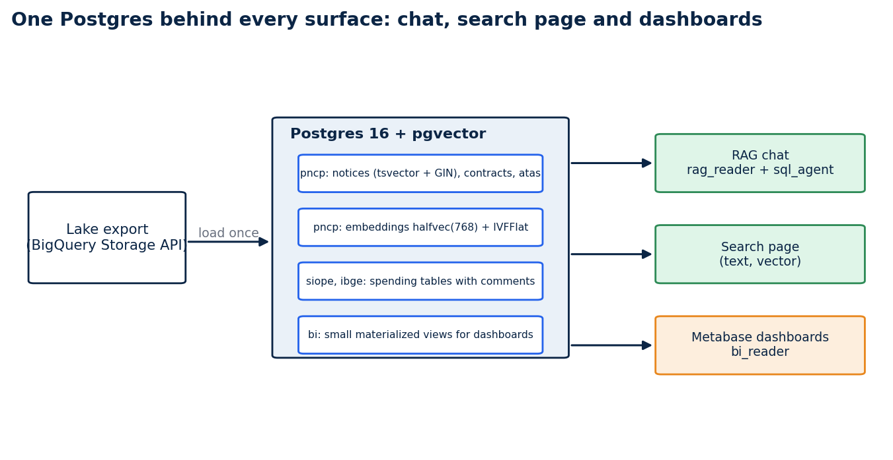
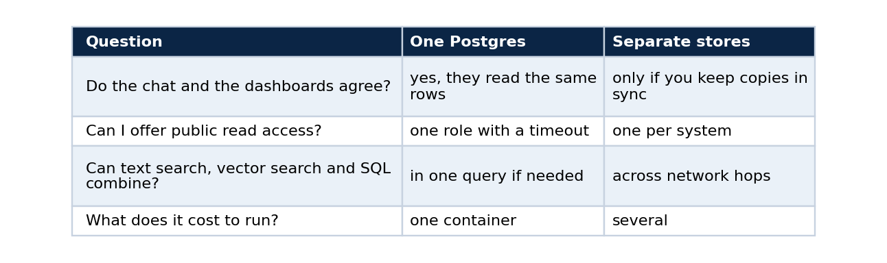
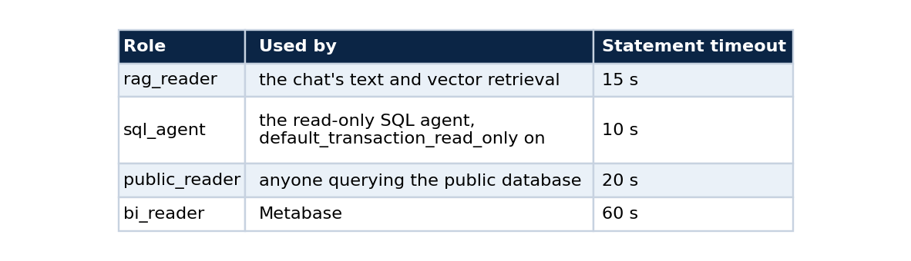
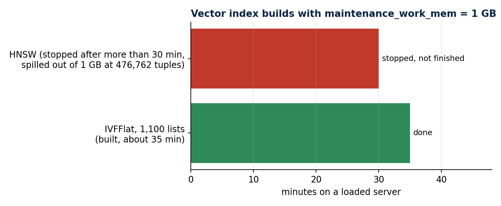
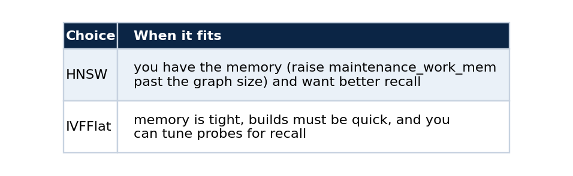
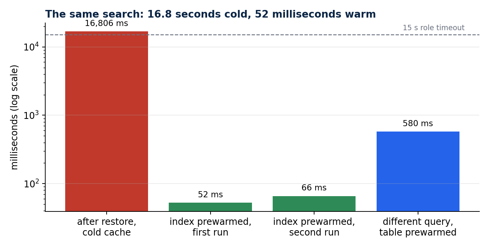

One Postgres for full-text search, vector search and dashboards
A tutorial: load a public-data lake into pgvector, index it three ways, give each reader its own limits, and keep it fast on a small server
I wanted the chat, the search page and the dashboards on my site to read from the same place. That removes a class of bugs where three copies of the data drift apart, and it makes a public read-only database easy to offer to anyone who wants to query it.
This tutorial builds that Postgres on a 12 GB server. It covers the container, the roles, loading from BigQuery, the three kinds of index (full text, vector, and small aggregate views), and the operational habits that decided whether the site felt fast or broken. All the numbers come from the run I did on 30 September 2026.

One database, four groups of tables, three kinds of readers.
What you will have
A Postgres 16 with the pgvector extension holding about 1.17 million procurement notices (with a Portuguese full-text index), about 3 million contracts, about 950 thousand price registrations, the education-spending tables from SIOPE, and 1.25 million notice embeddings. Four read-only roles with different time limits sit in front of it.
Why one database

The trade-off is that one server serves every reader, so each role needs its own limits (step 2) and the memory has to be shared sensibly (step 1).
Step 1: the container
The database runs in its own Compose project, reachable only over a private Docker network.
services:
db:
image: pgvector/pgvector:pg16
command: >
postgres -c shared_buffers=768MB -c work_mem=16MB -c effective_cache_size=3GB
-c max_connections=60 -c maintenance_work_mem=1GB
-c shared_preload_libraries=pg_prewarm -c pg_prewarm.autoprewarm=true -c pg_prewarm.autoprewarm_interval=300
volumes: ["/opt/pncp-db/data:/var/lib/postgresql/data"]
mem_limit: 3500m
shm_size: 512m
networks: [pncpdb]
Three of those settings matter later. maintenance_work_mem decides whether an index builds in memory. shm_size is the ceiling for parallel work. And pg_prewarm.autoprewarm saves the buffer cache every five minutes and restores it after a restart, which is the fix for the problem described near the end.
Step 2: roles with limits
One role per kind of reader, each with its own timeout, so a runaway query from one surface cannot hold the others.

ALTER ROLE sql_agent SET statement_timeout = '10s';
ALTER ROLE sql_agent SET default_transaction_read_only = on;
GRANT USAGE ON SCHEMA pncp, siope, ibge, bi TO sql_agent, rag_reader, bi_reader, public_reader;
GRANT USAGE ON SCHEMA public TO sql_agent, rag_reader, bi_reader, public_reader; -- see the note below
The last line cost me time, so it deserves a note. The pgvector extension installs its types and operators in schema public. I had revoked access to public from the read roles as a hardening step, and a query with ::halfvec failed with type "halfvec" does not exist even though the extension was installed. The error looks like a missing extension, and it is in fact a missing schema permission. Grant USAGE on the schema that holds the extension objects. The schema holds no tables of mine, so nothing else is exposed.
Step 3: load from the lake
I read each table through the BigQuery Storage API and stream it into Postgres with COPY, so there is no intermediate file. Descriptions on the source columns become Postgres COMMENTs. That detail pays off when an agent has to write SQL (see the companion article on the SQL agent).
The embeddings load, 1,248,774 rows of 768-dimension vectors, took 1,748 seconds (about 29 minutes). They are stored as halfvec(768), which halves the space against vector(768).
CREATE TABLE pncp.editais_embeddings (
numero_controle_pncp text NOT NULL,
embedding halfvec(768) NOT NULL);
The source table had a few duplicate ids, so the load is followed by a deduplication and a unique index. One table from the education data, the expenditure detail, has 135 million rows and 26 GB in the lake. I left it out. It does not fit this server, and neither the dashboards nor the agent need it.
Step 4: full-text search
The notices table has a generated tsvector column with the Portuguese configuration and a GIN index, 89 MB for 1.17 million notices.
-- how the backend asks: every question term becomes an OR-group of its forms, joined with AND
SELECT count(*) FROM (
SELECT 1 FROM pncp.obt_pncp_editais_semantico
WHERE fts @@ to_tsquery('portuguese', '(''merenda'') & (''escola'' | ''escolar'')') LIMIT 100000) m;
That query matched 9,112 notices for "merenda escolar". The LIMIT inside the count keeps a very common term from scanning the whole index.
Step 5: the vector index, and the one that did not fit
My first choice was HNSW, because it gives better recall than IVFFlat. With maintenance_work_mem at 1 GB, Postgres printed a warning partway through the build:
NOTICE: hnsw graph no longer fits into maintenance_work_mem after 476762 tuples
DETAIL: Building will take significantly more time.
After more than 30 minutes I stopped the build. A graph for 1.25 million 768-dimension vectors needs more memory than this server can spare, and the build falls back to a very slow path once it spills.

HNSW spilled out of memory at 38 percent of the rows and was stopped. IVFFlat finished.
IVFFlat with 1,100 lists built in about 35 minutes on the same loaded server, and search works with ivfflat.probes set on the connection.
SET max_parallel_maintenance_workers = 0; -- the 512 MB /dev/shm cannot host a parallel build
SET maintenance_work_mem = '1GB';
CREATE INDEX editais_embeddings_ivf ON pncp.editais_embeddings
USING ivfflat (embedding halfvec_cosine_ops) WITH (lists = 1100);
I turned parallel workers off for the build for a concrete reason. A deduplication DELETE ... USING on the same table had already failed with could not resize shared memory segment ... No space left on device, which is the small /dev/shm of the container, so I ran both steps serially.

Either way, measure recall on your own queries before you trust it. A query through the index returned notice identifiers in about 1.5 to 5.6 seconds on the loaded server, and the ranking looked right on Portuguese queries such as "reforma de escolas" (the top hits were notices about school renovation).
Step 6: small aggregate views for dashboards
A dashboard should never scan a million rows on each page load. I created a bi schema of materialized views, each a few rows.
CREATE MATERIALIZED VIEW bi.pncp_notices_by_month AS
SELECT date_trunc('month', data_publicacao_pncp)::date AS month, count(*) AS notices
FROM pncp.obt_pncp_editais_semantico WHERE data_publicacao_pncp IS NOT NULL GROUP BY 1 ORDER BY 1;
-- refresh when the source changes: REFRESH MATERIALIZED VIEW bi.pncp_notices_by_month;
The operational habit that mattered most: warm the cache
After the restore, the first real search on the site returned an error. The same full-text count that later took milliseconds took 16.8 seconds, above the role's 15-second timeout. The data was fine. The Postgres cache was cold, and every page had to come from disk.

16.8 seconds against 52 milliseconds. The dashed line is the 15-second timeout of the chat's role.
pg_prewarm loads a relation into memory. Prewarming the full-text index took about 4 seconds, and the table itself about 99 seconds, because it is 1.5 GB.
CREATE EXTENSION IF NOT EXISTS pg_prewarm;
SELECT pg_prewarm('pncp.obt_pncp_editais_semantico_fts_idx');
SELECT pg_prewarm('pncp.obt_pncp_editais_semantico');
After that, the same count took 52 ms, and a different query over the same table 580 ms. The contracts table (2.3 GB) needed its own prewarm too, about 2 minutes and 15 seconds.
Do this after every restore or restart. The autoprewarm setting in step 1 makes it automatic after the next restart, so I stopped depending on a manual step.
Check your work
-- three checks worth keeping
SELECT count(*) FROM pncp.obt_pncp_editais_semantico; -- the row count you expect
EXPLAIN SELECT 1 FROM pncp.obt_pncp_editais_semantico
WHERE fts @@ to_tsquery('portuguese', '''merenda'''); -- should show the GIN index
SELECT * FROM bi.pncp_notices_by_month ORDER BY month DESC LIMIT 3; -- the views answer instantly
And one check for each role, run as that role: a read works, a write fails, and a vector query with ::halfvec works. That last one would have caught the missing schema permission.
Limits
This is a snapshot: the lake keeps growing, and mine has a cutoff of 31 July 2026, so the Postgres has fewer rows than the lake does today (for example 1,166,977 notices against 1,247,894). The vector index is IVFFlat, so recall is approximate, and I have not measured it. A server with more memory would be a better home for the graph index.
Code and links
- vps_rt_infra: the
pncp-dbfolder with the compose file, roles, loaders and views - rag-chat: the backend that reads this database
- Kaggle datasets: the public datasets behind these projects, with schemas and SHA-256 manifests
- GitHub profile: all repositories
My portfolio: https://rangeltech.net